器材库 > 35mm画幅可换镜头数码相机 > EOS 5Ds/5DsR
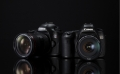
规格总览
产品类型
35mm画幅可换镜头数码相机
发布日期
2015-02-06
影像规格
影像传感器
CMOS
影像传感器尺寸
约36×24毫米
总像素
5300万
有效像素
5060万
影像处理器
双DIGIC 6
低通滤镜
5DsR取消低通滤镜效果
最大解像度
约5030万像素（8688 × 5792）
静态图像格式
JPEG, RAW, RAW+JPEG
画幅比
3:2
短片尺寸
1920 × 1080 （全高清）：30p/25p/24p
短片格式
MPEG4-AVC/H.264
短片音效
线性PCM
防抖系统
反光镜振动控制系统
除尘系统
自动、手动、添加除尘数据
镜头和对焦
镜头卡口
Canon EF
兼容镜头
佳能EF系列镜头（EF-S镜头、EF-M镜头除外）
对焦系统类型
TTL辅助影像重合，相位检测
对焦点
61点（最多41个十字型对焦点）
对焦模式
单次自动对焦、人工智能伺服自动对焦、人工智能自动对焦、手动对焦
自动对焦点选择
自动, 手动
AF辅助灯
无
手动对焦
支持
曝光控制
测光系统
使用15万像素 RGB+红外 测光感应器、252区TTL全开光圈测光
测光模式
中央重点测光, 多分区评价测光, 点测光, 局部测光
测光范围
EV 0～20（23℃、ISO 100）EV
曝光模式
Auto, P（程序自动曝光）, B门, A（光圈优先自动曝光）, M（手动测光曝光）
拍摄模式
自动、标准、人像、风光、精致细节、中性、可靠设置、单色、用户定义1～3
快门类型
电子控制焦平面快门
快门速度
1/8000至30秒（所有拍摄模式）、B门
闪光同步速度
闪光同步速度1/200秒
曝光补偿
±3 或 ±5EV以手动：在±5级间以1/3或1/2级为单位调节 自动包围曝光：在±3级间以1/3或1/2级为单位调节EV级调整
自动曝光锁
有
ISO感光度
50, 可扩展至12800
白平衡
日光, 闪光灯, 阴天, 自定义, 荧光灯H, 阴影, 白色设置, 自动, 钨丝灯, 白平衡包围
自拍
10秒, 2秒
连拍
高速连拍：最高约5张/秒 低速连拍：最高约3张/秒 静音连拍：最高约3张/秒
闪光灯
内置闪光灯
无
闪光补偿
±3EV
PC端子
有
取景器/显示屏
取景器
眼平五棱取景器
取景范围
100%
取景放大倍率
约0.71倍
屈光度调节范围
约-3.0～+1.0 m-1（dpt）
对焦屏
固定式
反光镜锁定
有
取景器信息
电量、白平衡、驱动模式、自动对焦操作、测光模式、图像画质：JPEG/RAW、闪烁检测、取景器内！警告
景深预视
有
LCD类型
彩色TFT LCD
LCD尺寸
3.2英寸
LCD像素
104万
亮度调节级数
自动（暗、标准、亮）、手动（7级）
Live View
有
文件输入/输出
存储卡
CF, SD/SDHC, SDXC
数据接口
USB3.0
视频/音频接口
MIC 输入, HDMI Mini 输出
扩充系统端子
遥控器RC-6
支持打印协议
PictBridge
电源
电池
电池LP-E6N/LP-E6（1块）
续航能力
使用取景器拍摄：23℃时约700张、0℃时约660张 使用实时显示拍摄：23℃时约220张、0℃时约210张23℃时约1小时30分钟 0℃时约1小时25分钟
机身规格
材质
镁合金
颜色
黑色
尺寸
约152 × 116.4 × 76.4毫米mm
重量
约930克（CIPA方针） 约845克（仅机身g
hoepal2017-05-21 20:244.5 分
操作性 5.00功能性 4.50美观性 5.00趣味性 4.00耐用性 4.50性价比 4.00解像力 4.50色彩还原 4.50
史亿刀2016-10-31 23:124.81 分
操作性 5.00功能性 5.00美观性 5.00趣味性 4.50耐用性 5.00性价比 4.50解像力 5.00色彩还原 4.50
Heero2016-09-27 20:064.81 分
操作性 5.00功能性 5.00美观性 5.00趣味性 4.50耐用性 5.00性价比 4.00解像力 5.00色彩还原 5.00
wu98982016-05-21 18:394.81 分
操作性 5.00功能性 5.00美观性 5.00趣味性 5.00耐用性 5.00性价比 4.50解像力 4.50色彩还原 4.50
宛如凤凰2016-03-01 18:544.94 分
操作性 5.00功能性 5.00美观性 5.00趣味性 5.00耐用性 5.00性价比 4.50解像力 5.00色彩还原 5.00
reapers2015-11-18 18:594.63 分
操作性 5.00功能性 5.00美观性 5.00趣味性 4.00耐用性 5.00性价比 3.00解像力 5.00色彩还原 5.00
nk58186992015-09-09 09:32
Living2015-08-04 09:124.56 分
操作性 5.00功能性 4.50美观性 4.50趣味性 4.50耐用性 5.00性价比 3.00解像力 5.00色彩还原 5.00
深拓澜2015-02-12 06:240.5 分
操作性 0.50功能性 0.50美观性 0.50趣味性 0.50耐用性 0.50性价比 0.50解像力 0.50色彩还原 0.50
产品图 / 样片
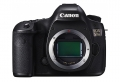
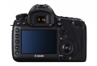
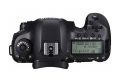
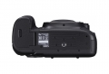
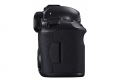
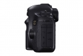
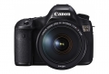
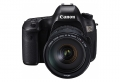
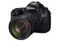
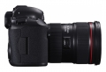
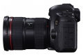
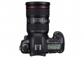
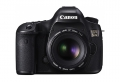
评测 / 相关文章
- 详细内容 （存档）
- 体会细节独特魅力 佳能5Ds画质大揭露 （存档）
- ［资讯］关于腾龙镜头与5Ds/5DsR兼容性告知 （存档）
- ［行情］佳能EOS 5DSR上市献礼 不容错过 （存档）
- ［资讯］外媒测试：佳能EOS 5DS R分辨率爆表 （存档）
- ［试用］佳能EOS 5Ds R新加坡实拍样片 （存档）
- ［试用］佳能EOS 5Ds棚拍样张 （存档）
- ［试用］佳能EOS 5DS突袭无忌编辑部 （存档）
- ［行情］佳能EOS 5Ds/5DsR准备上市 （存档）
相关文章
- ［资讯］关于腾龙镜头与5Ds/5DsR兼容性告知 （存档）
- ［行情］佳能EOS 5DSR上市献礼 不容错过 （存档）
- ［资讯］外媒测试：佳能EOS 5DS R分辨率爆表 （存档）
- ［试用］佳能EOS 5Ds R新加坡实拍样片 （存档）
- ［试用］佳能EOS 5Ds棚拍样张 （存档）
- ［试用］佳能EOS 5DS/5DS R详细评测 （存档）
- ［试用］佳能EOS 5DS突袭无忌编辑部 （存档）
- ［行情］佳能EOS 5Ds/5DsR准备上市 （存档）
- ［试用］EOS 5DS演绎建筑细节之美 （原站已下线）
- ［行情］佳能5Ds最新低价 （原站已下线）
- ［行情］佳能最高像素机身5Ds特价 （原站已下线）
- ［试用］EOS 5D2、5DSR漫游澳洲 （原站已下线）
- ［试用］谁是5D画质王 佳能5DS与5D4对比评测 （原站已下线）
- ［资讯］EOS 5Ds和EOS 5D4对比总结 （原站已下线）
- ［行情］佳能画质机5Ds机身新春特价 （原站已下线）
- ［行情］佳能画质机5Ds机身特价 （原站已下线）
- ［试用］EOS 5DSR之2016秋季西北行 （原站已下线）
- ［试用］有图有真相 佳能5Ds和5D4对比总结 （原站已下线）